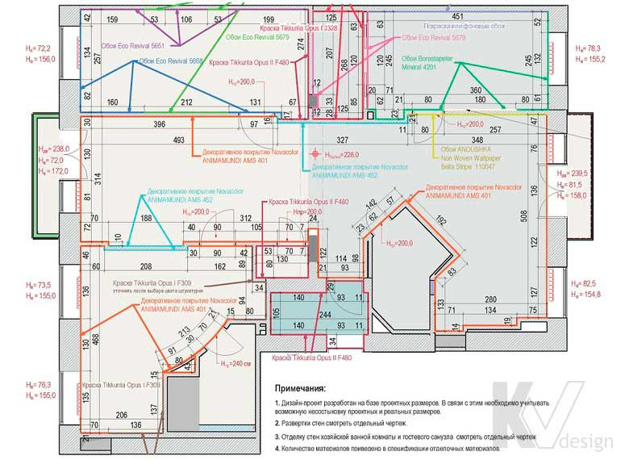

План покраски стен и поклейки обоев

Відповідно до цього плану будівельники виконуватимуть обробку приміщень. Для кожної кімнати на кресленні дані вказівки щодо застосування конкретних типів шпалер, фарб і декоративних покриттів, а також різними кольорами відмічені ділянки стін під їх нанесення або наклеювання. До плану можуть додаватися додаткові креслення, на яких показана розгортка стін як для всієї квартири або будинку, так і для окремих приміщень, якщо вони з якихось причин потребують особливої уваги будівельників.